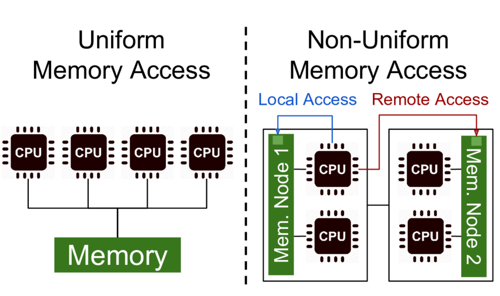
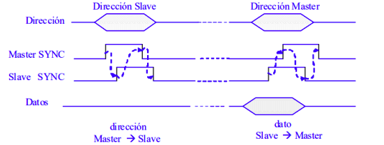
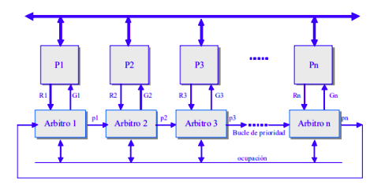
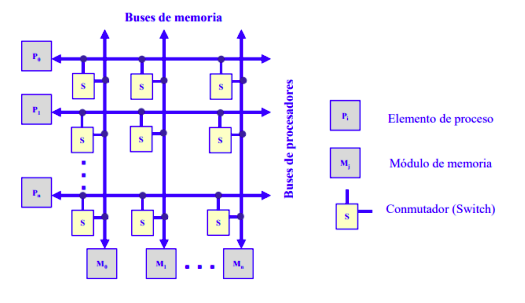

Estructura de los multiprocesadores de memoria compartida.
La mayoría de los multiprocesadores comerciales son del tipo UMA (Uniform Memory Access): todos los procesadores tienen igual tiempo de acceso a la memoria compartida. En la arquitectura UMA los procesadores se conectan a la memoria a través de un bus, una red multietapa o un conmutador de barras cruzadas (red multietapa o un conmutador de barras cruzadas (crossbar crossbar) y disponen de su propia ) y disponen de su propia memoria caché. Los procesadores tipo NUMA (Non Uniform Memory Access) presentan tiempos de acceso a la memoria compartida que dependen de la ubicación del elemento de proceso y la memoria.
4.3.1 Redes de interconexión dinámica (indirecta).
Medio compartido.
Conexión por bus compartido.
Es la organización más común en los computadores personales y servidores.
El bus consta de líneas de dirección, datos y control para implementar:
Los procesadores utilizan cachés locales para:
Protocolos de transferencia de ciclo partido.
La operación de lectura se divide en dos transacciones no continuas de acceso al bus. La primera es de petición de lectura que realiza el máster (procesador) sobre el slave (memoria). Una vez realizada la petición el máster abandona el bus. Cuando el slave dispone del dato leído, inicia un ciclo de bus actuando como máster para enviar el dato al antiguo máster, que ahora actúa como slave.
Protocolo de arbitraje distribuido.
La responsabilidad del arbitraje se distribuye por los diferentes procesadores conectados al bus.
Arbitro-i concede el bus al procesador Pi activando Gi si:
El árbitro i activa su línea de prioridad pi si:
Conmutadas.
Conexión por conmutadores crossbar.
Cada procesador (Pi) y cada módulo de memoria (Mi) tienen su propio bus. Existe un conmutador (S) en los puntos de intersección que permite conectar un bus de memoria con un bus de procesador.
Para evitar conflictos cuando más de un procesador pretende acceder al mismo módulo de memoria se establece un orden de prioridad. Se trata de una red sin bloqueo con una conectividad completa pero de alta complejidad.
Conexión por red multietapa.
En general las redes multietapa responden a este esquema.